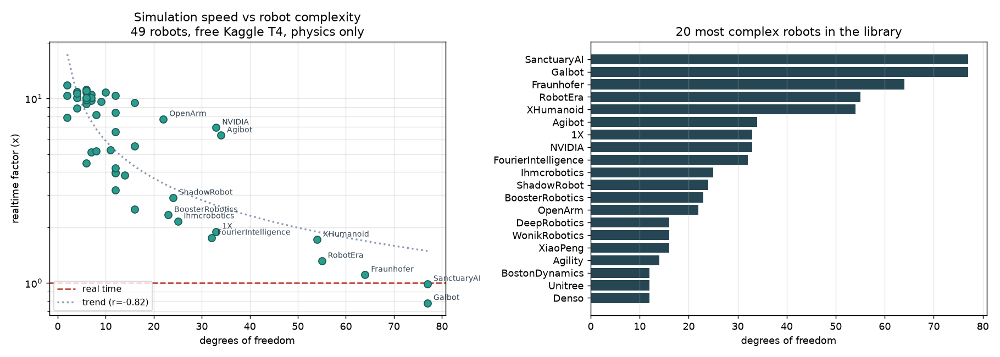
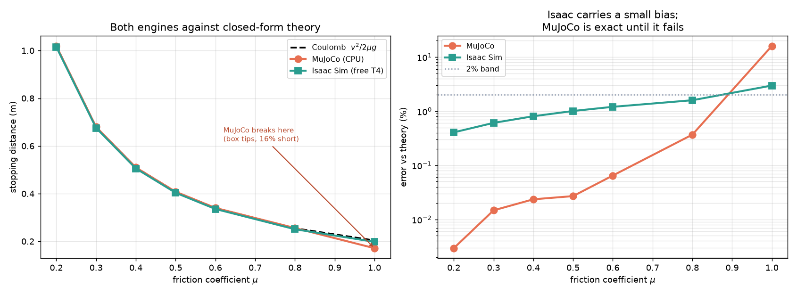
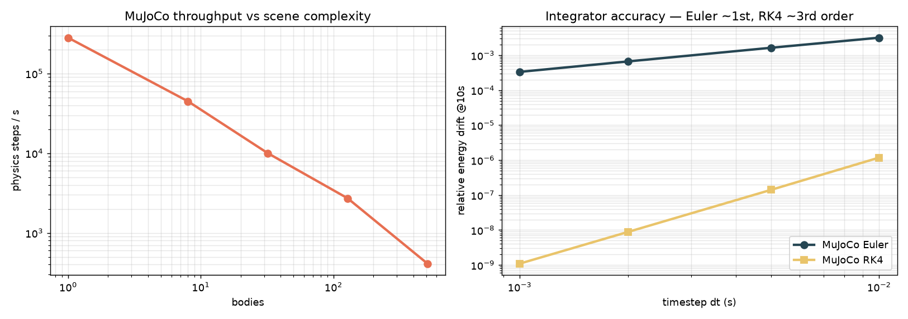
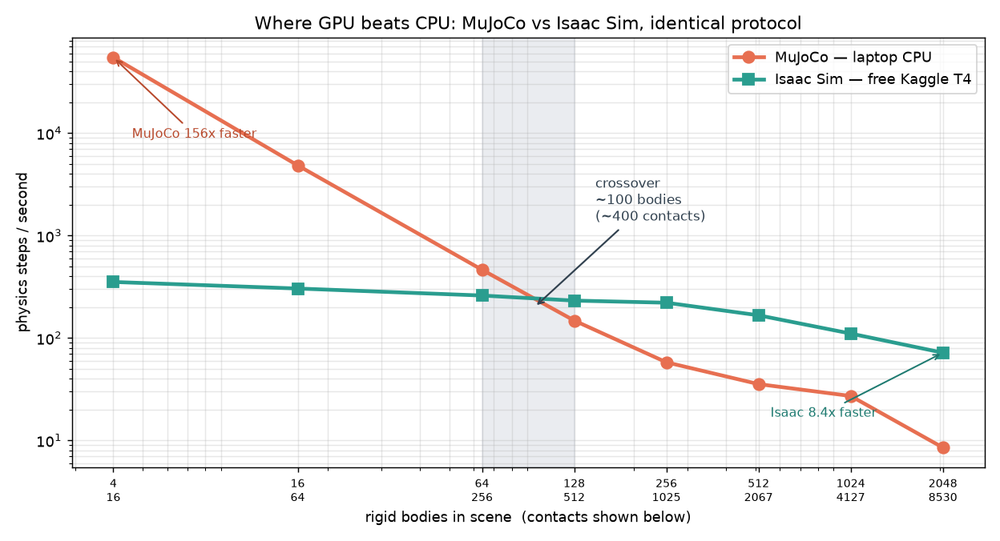
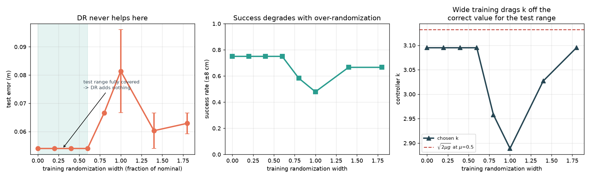

A robot authored from scratch for three simulators, validated to machine precision, wrapped in CI that asserts against closed-form physics rather than stored golden values. Where a prediction turned out wrong, the wrong answer is documented next to the correction - because those are the parts worth reading.
model/robot_spec.py holds the parameters; model/emit.py generates MJCF, URDF and SDF from that single source so the three formats cannot drift. Comparing numbers proves the files agree; comparing kinematics proves the robots agree. The first run reported 147/147 numbers correct with 0.23 m of forward-kinematics error - in URDF the link frame sits at the joint, so every centre of mass was attached to the wrong place.
python model/emit.py # regenerate all three formats python model/validate.py # 151 comparisons + 2000-config FK pytest tests/ # 17 gates
Forty-nine robots from the public libraries, simulated physics-only on a free Kaggle T4. Realtime factor falls off with degrees of freedom (r = -0.82), and the trend line says exactly which machines are cheap to train and which are not.

A sliding box is one of the few contact problems with an exact answer: stopping distance v²/2μg. Isaac Sim carries a small, honest bias everywhere. MuJoCo is exact until the box tips at μ = 1.0 and lands 16% short - the kind of failure a golden-value test would never catch, because the stored golden value would be wrong too.



To halve penetration, halve the timestep - solref below 2·dt is silently clamped and does nothing. A gearbox multiplies rotor inertia by N², so at 100:1 a 2e-5 kg·m² rotor outweighs the entire link. isfinite() is not a stability test. Each rule exists because a measurement, not a hunch, put it there.
